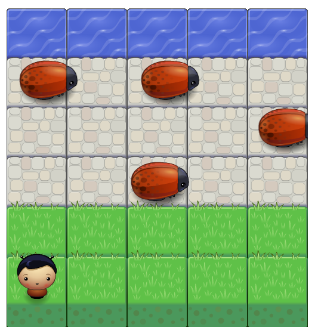
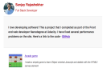

-

Arcade game
I made a simple game to learn Object oriented Javscript and dabble with the HTML5 canvas element
-
Interactive Resume
Another webpage that I built to learn Javascript
-

Website Performance Optimization
This site might not look great, but the idea is to showcase my skills in improving a site's performance! Take a look at my Github to see the improvements I have made to this site.
-
Cam's Pizzeria
This site had a terrible jank. I modified the code to run at a smooth 60fps!